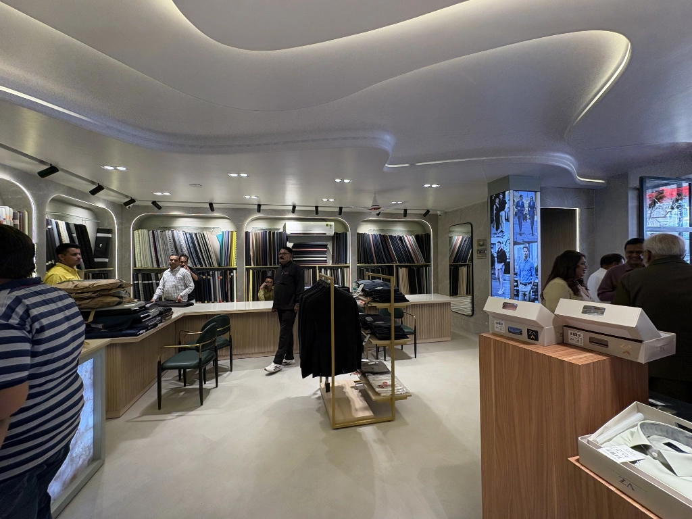

Can an Architect Design Within Your Budget?
क्या एक आर्किटेक्ट आपके बजट में डिज़ाइन कर सकता है?

One of the most common questions people ask before starting a construction or renovation project is: "Can an architect design something within my budget?" The short answer? Yes — but only if the budget is realistic, transparent, and discussed openly from Day 1. Let us break down what that really means and how you can ensure your architect delivers a design that fits both your vision and your wallet.
1. Architecture is not Just Design — it is Cost Management
A good architect does more than sketch beautiful spaces. They help you:
- Plan efficiently
- Optimize your usable area
- Avoid unnecessary structural costs
- Choose materials that fit your budget
- Reduce long-term maintenance expenses
Architecture is a balance between creativity and financial reality. The right architect will always design with cost in mind.
2. Your Budget Sets the Design Direction
Be crystal clear about how much you can spend. Your architect needs to know:
- Total project budget
- Preferred materials
- Must-have features
- Parts you are willing to compromise on
- Whether the budget includes furniture, interiors, or only construction
A vague budget = costly surprises.
An honest budget = a design that fits your expectations.
3. Yes, Architects Can Work With Small Budgets Too
Good architects are problem solvers. Even with a small budget, they can:
- Maximize natural light to reduce electrical costs
- Use cost-effective materials creatively
- Keep the structure simple to avoid high labor charges
- Reuse or repurpose existing elements
- Plan phases (build now, add later)
Budget-friendly design is not "cheap design." It is smart design.
4. Cost Estimates are not Guesswork — They Follow a Process
To design within your budget, architects rely on:
- Current construction rates
- Market prices of materials
- Past project costs
- Consultation with contractors
- Structural and MEP inputs
While cost estimates are not 100% fixed, they give a realistic direction. If the design starts exceeding your budget, a good architect will flag it early.
5. Your Choices Matter More Than You Think
You influence the final cost more than anyone else:
- Marble vs. tiles
- Sliding windows vs. hinged
- Custom furniture vs. ready-made
- Complex roofing vs. flat slab
- Imported fittings vs. local brands
Even small choices can significantly impact the budget. Your architect will guide you — but the decision is yours.
6. Be Open to Alternatives
If something pushes you over budget, your architect will suggest:
- Alternate materials
- Adjusted room sizes
- Different construction methods
- Simplified detailing
- Phasing the project
Flexibility helps you stay within budget without compromising the overall vision.
7. Regular Cost Checks Keep You in Control
Designing within budget is not a one-time task. It is continuous. Ask your architect to:
- Provide milestone-based cost checks
- Update materials based on real-time pricing
- Review drawings with contractors for feasibility
- Revise designs if costs escalate unexpectedly
This collaboration ensures you never face sticker shock during construction.
8. The Architect-Contractor Duo Matters
A design may be perfectly budget-friendly on paper — but execution matters. When your architect works closely with the contractor:
- Design mistakes are minimized
- Material wastage is reduced
- Work becomes more efficient
- You avoid last-minute cost spikes
Building is teamwork. Choose a pair that coordinates well.
9. When Budget Issues Occur, it is Usually Because…
- The client was not transparent about the real budget
- Market rates increased unexpectedly
- Too many design changes were requested
- High-end materials were added midway
- The contractor mismanaged the execution
Most problems are avoidable with communication and discipline.
So… Can an Architect Design Within Your Budget?
Absolutely. But only when the partnership works both ways.
Here is the formula:
Clear Budget + Honest Communication + Smart Choices + Right Architect = A Design That Fits Your Wallet
When you work with an architect from the beginning and treat your budget as a guiding principle—not a secret—your dream project becomes achievable, stress-free, and financially sound.
Ready to Start Your Dream Project?
अपने सपनों का प्रोजेक्ट शुरू करने के लिए तैयार हैं?
Let's discuss your budget and create a design that works for you.
Schedule a Consultation